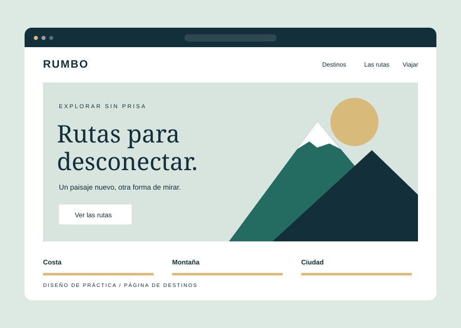
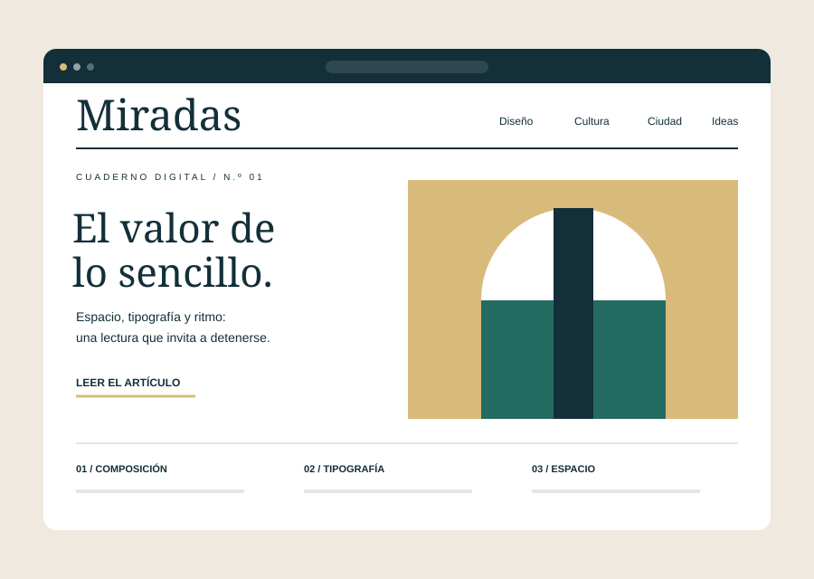
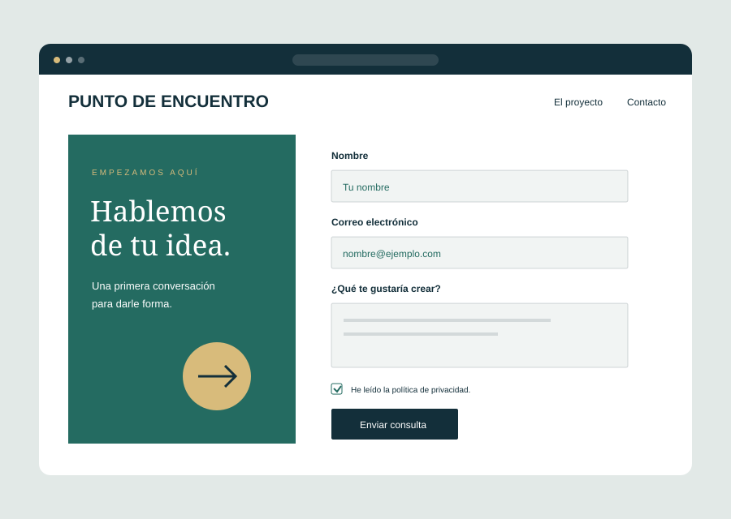

01 / Página de presentación
Una pausa, un café
Presentación de una cafetería ficticia: jerarquía de títulos, contraste y una distribución clara del contenido.
Portafolio / Proyectos de práctica
Una selección de propuestas ficticias para explorar la composición, la tipografía y la organización de una página web.
Diseños de muestra · Sin clientes reales
01 / Página de presentación
Presentación de una cafetería ficticia: jerarquía de títulos, contraste y una distribución clara del contenido.

02 / Composición visual
Una composición para practicar alineaciones, espacios y el uso de una paleta de tres colores.

03 / Cuadrícula de imágenes
Una galería centrada en el ritmo visual de las imágenes, sus proporciones y la separación entre elementos.

04 / Contenido y navegación
Una propuesta de viajes para combinar una imagen principal, llamadas a la acción y contenido por secciones.

05 / Tipografía y lectura
Un ejercicio de jerarquía tipográfica, anchura de lectura y distribución de texto en una página editorial.

06 / Formularios HTML5
Una composición para practicar etiquetas, campos obligatorios y presentación de formularios.
Puedes plantear una propuesta en el formulario de presupuesto.
Cuéntame tu idea